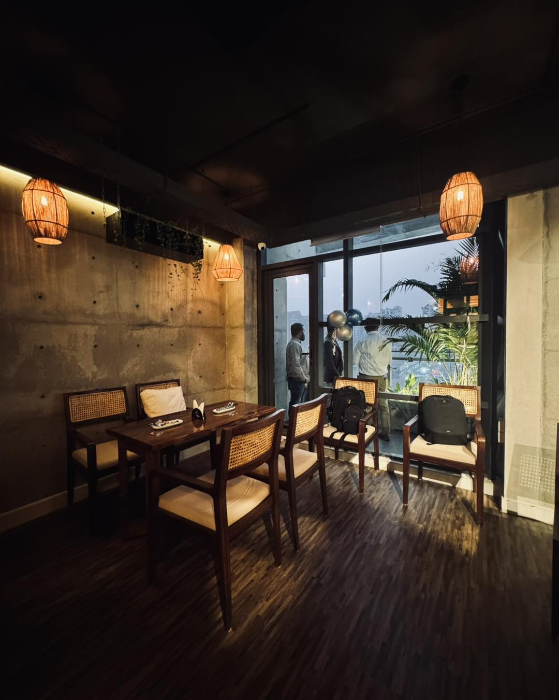
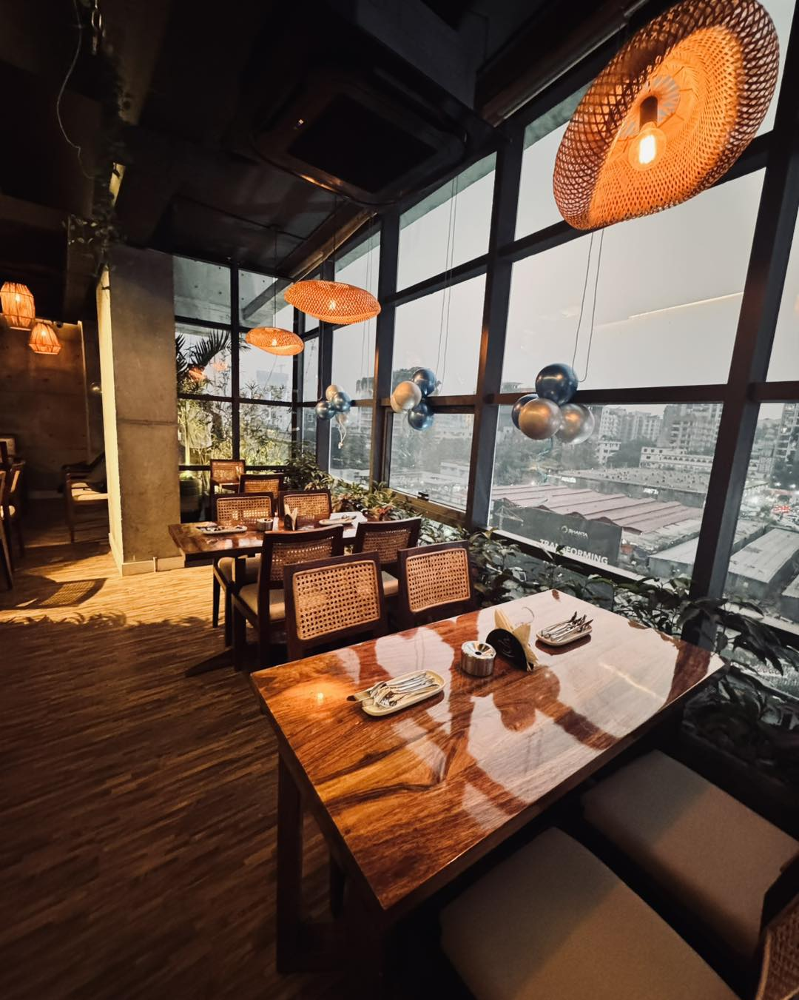

The 2 Bros feeling
Where the city
slows down.
Where coffee, conversations, and late nights come together.
Set above Gulshan Avenue, 2 Bros Cafe is a place to pause, meet up, and make a little room for the moment. Come for the atmosphere, settle in for a conversation, and let the evening take its time.
Plan your visit

A little room to linger
Good light.
Good company.
From a cozy corner to a seat by the windows, the cafe’s warm interiors invite you to take a breath and stay awhile. Find your own favorite spot on the fifth floor in Gulshan.
Explore the galleryDrop in and say hello